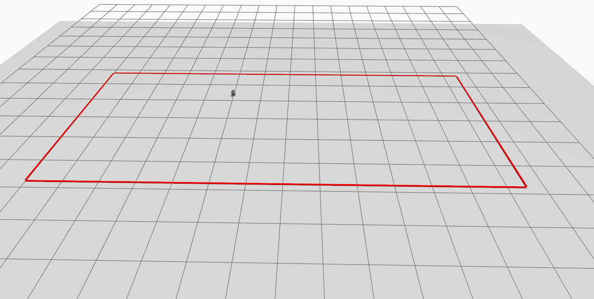
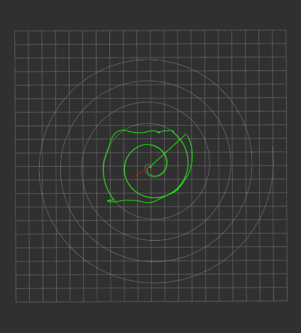

Conventional distance-based Control Barrier Functions (CBFs) may be overly conservative for nonholonomic robots because they primarily consider positional safety without fully accounting for the robot’s heading and angular dynamics. This limitation becomes particularly significant during tight turns, where the robot must turn before it can follow the desired safe direction. This research investigates incorporating the robot’s heading and angular motion into the CBF formulation to enable tighter and safer maneuvering while maintaining smooth and accurate trajectory tracking.
